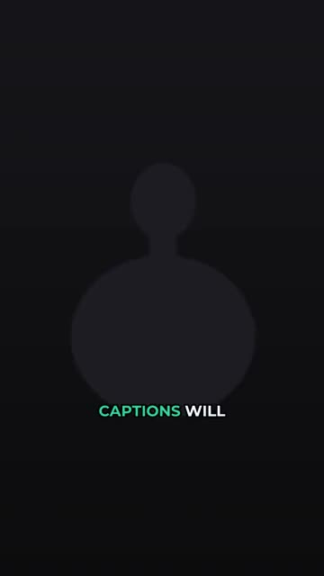
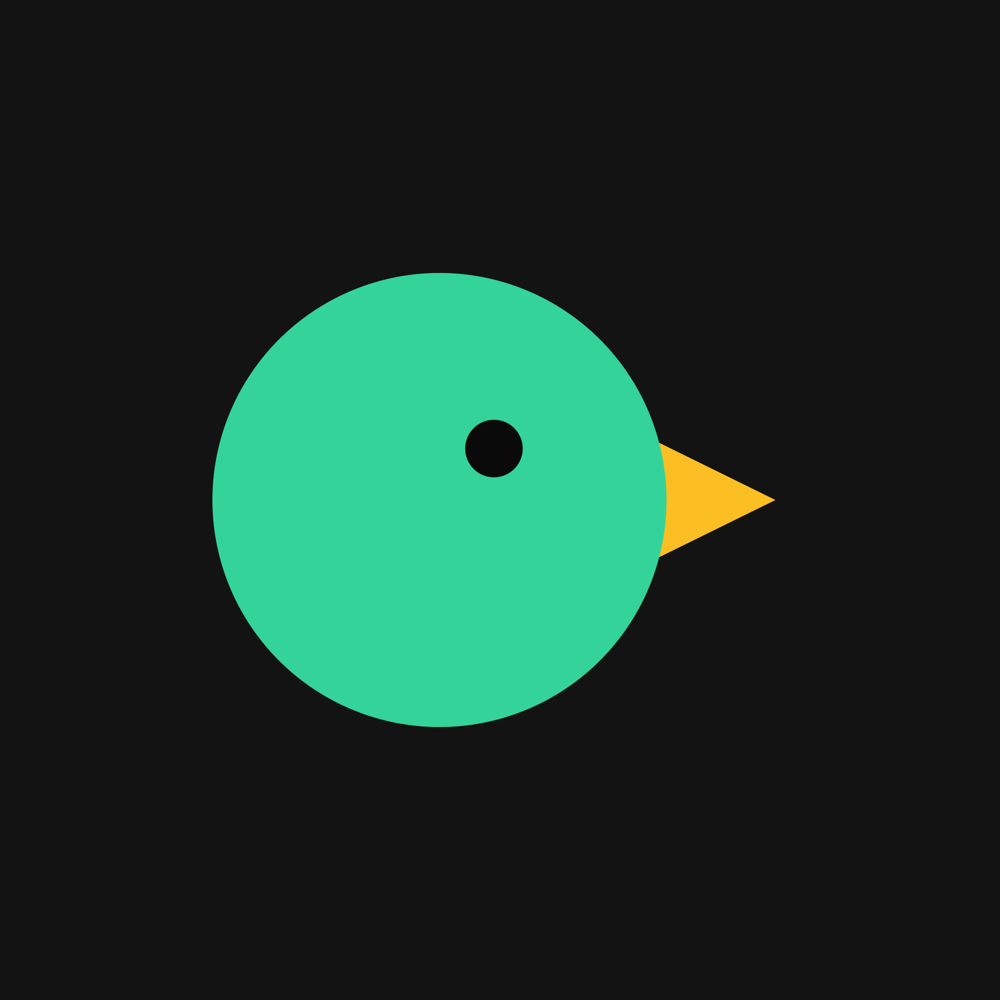

Windows 10 & 11 desktop app · v0.1.33
Video clipping app for creators
Turn long podcasts, streams, and tutorials into 9:16 vertical shorts on your own PC. Unlimited video length, $0 monthly cloud fees.

Why most podcasts quit after ten episodes
How we cut editing time from four hours to ten minutes
The one microphone mistake that ruins interviews
Clip Robin batch queue. Drop files or paste YouTube links.
Up next on your PC
58 min · Speaker tracked · Captions ready
41 min · Centering active speaker
22 min · Waiting for transcript
1 hr 45 min · Runs overnight
Clip 01: Why most podcasts quit after ten episodes
00:14:22 to 00:14:56 · 34 seconds · 9:16 vertical
How a long video becomes shorts
-
Batch queue for local files and YouTube links
Drop recordings from your hard drive or paste YouTube links. Clip Robin works through the whole list in order on your PC.
Step 1: Multi-video batch queue
Local files & linksInterview_With_Maya.mp4Finished8 vertical clips saved to your folder
youtube.com/watch?v=creator-talkClip 3 of 5Pulling audio and finding talking points
Gameplay_Highlight_Reel.mkvNext in lineStarts automatically when the current job ends
-
Active speaker framing in 9:16 vertical video
Wide interviews and moving hosts get cropped cleanly into 9:16 vertical video so faces stay right in the middle of the phone screen.
Step 2: Active speaker framing
9:16 vertical lockActive speakerSwitches cleanly between two speakers or follows a solo host as they move across the frame.
-
Local captions and transcript on your PC
Clip Robin listens to your audio on your own computer and builds word-by-word subtitles without uploading huge files to a website.
Step 3: On-device transcript and captions
Works offline00:02Captions highlight every word as you speak.00:06Fix any spelling right inside the editor.00:11Export ready-to-post clips straight to disk.
Six caption styles ready to export. Pick a look and motion.
Every preview here was rendered by Clip Robin. Click a style and animation to see how your shorts will look before you download.
Caption style
Word motion
Robin highlights the spoken word in emerald green so viewers can follow fast commentary with the sound off.
Pricing on your own PC. No monthly minute limits.

Free desktop app
$0Queue unlimited videos, track speakers in 9:16, generate local transcripts and captions, and save every clip straight to your hard drive. Includes a small Clip Robin watermark.
Pro upgrade
OptionalRemove the watermark, add your own channel logo, use all six caption styles and motions, and turn on smart moment picking when you want help finding hooks.
- Monthly cloud billCloud clipping websites charge $15 to $79 every month $0 on your PC
- Video length and minute capsCloud plans cap you at 60 to 300 minutes a month Unlimited length
- Your raw footageNo waiting to upload multi-gigabyte podcast recordings Stays on your drive
- Finished clipsNever locked behind a renewal or deleted after 3 days Yours forever
Common questions
Everything you need to know before downloading the Windows installer.
Windows 10 & 11 (64-bit)Runs on your own PC. Free to start, no account required.
Do I need an expensive gaming PC to run Clip Robin?
No. Clip Robin runs on regular Windows 10 and 11 laptops and desktops. If your computer has a dedicated graphics card, it automatically uses it to export clips even faster.
Do my videos get uploaded to a cloud server?
No. Your recordings stay on your own hard drive. Reading speech for captions, centering the speaker, and rendering your finished shorts all run locally on your computer.
Is Clip Robin open source?
No. Clip Robin is proprietary desktop software built for Windows creators. You download the official installer directly and run it on your own machine.
How do I get new versions when you release updates?
Every download button on this page automatically points to our newest Windows release, so you always get the latest version with one click.